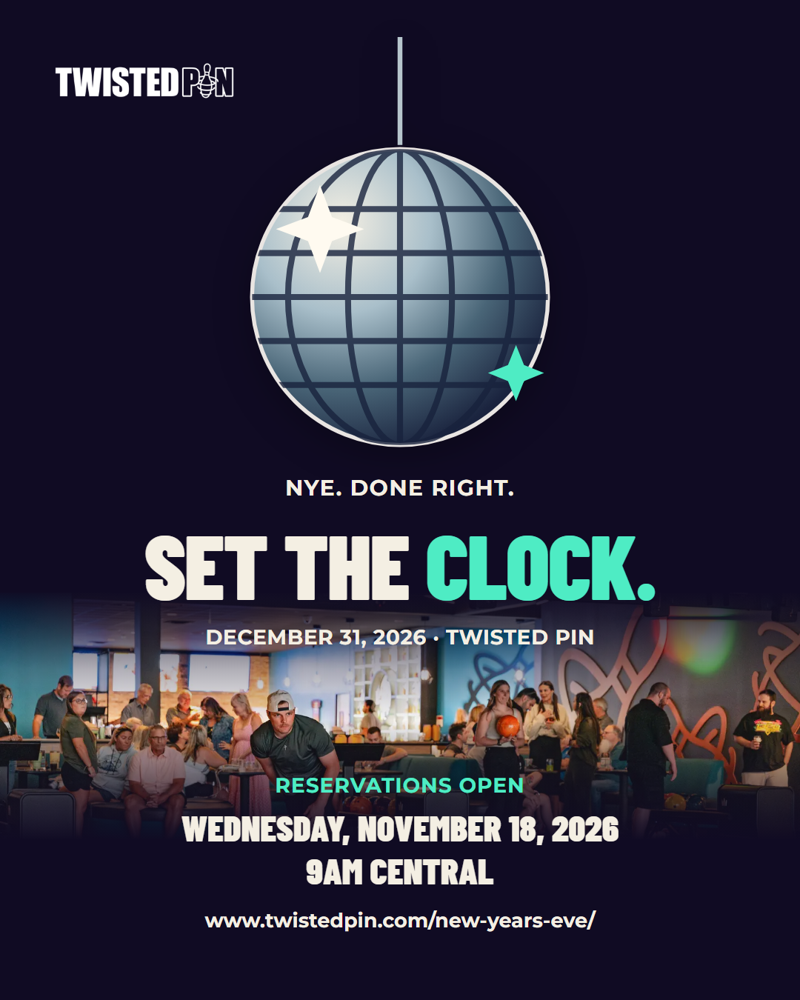
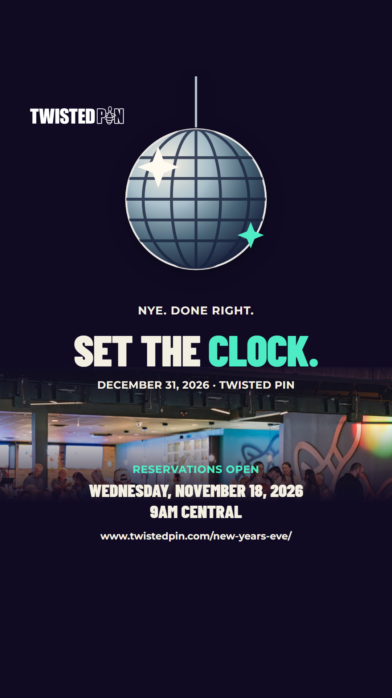

01-nye-set-the-clock · DRAFT
Set the clock.
Fri, Oct 23, 12:00 PM Central · optional kickoff


Review captions and link
Use the bio wording only after verifying the correct event link. The plain-address alternate is saved in campaign.json.
Story sticker: NYE details → https://www.twistedpin.com/new-years-eve/